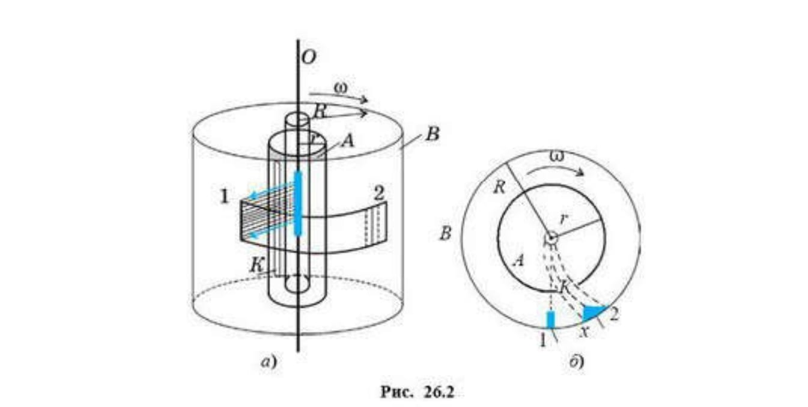

В создание современной молекулярно-кинетической теории внесли свой вклад М. В. Ломоносов, который опытным путем опроверг тео- рию теплорода, а также Р. Клаузиус, Л. Больцман, Д.И. Менделеев, Д. К. Максвелл. Перечислим ее основные положення.
- Все тела состоят из микрочасти (атомов или молекул), причем масса тела равна сумме масс микрочастиц, из которых оно состоит:
m = m0N
- Микрочастицы в теле непрерывно и хаотично движутся, причем скорость этого движения связана с температурой тела, поэтому его называют тепловым движение. Количественно связь скорости движения молекул с температурой тела установил австрийский физик Людвиг Больцман (1844—1906): v0 = √((3kT)/m0), где m0 - масса молекулы;Т— абсолютная температура тела; k = 1,38 * 10-23Дж/K - постоянная Больцмана .
- Микрочастицы в теле взаимодействуют друг с другом, причем силы взаимодействия носят электромагнитный характер. Между частицами тела одновременно действуют и силы отталкивання, и силы притяжения.
Приведем опытные факты, которые подтверждают основные положения молекулярно-кинетической теори.
- Делимость вещества. При этом физические и химические свойства вещества не изменяются.
- Сжимаемость газов. Это свидетельствует о наличии больших расстояния между молекулами тела.
- Свойство газа занимать любої объем. Этот факт говорит как о движении молекул, так по наличии расстояния между ними, которые легко меняются.
- Закон кратных отношений. Согласно этому закону, при образовании любых химических соединений массы реагирующих веществ находятся в определенных отношениях. Это доказывает, хотя и косвенно, что тела должны состоять з атомов.
- Давление газа на стенки сосуда, в котором он находится. Это говорит о движении молекул.
- Диффузия проникновение молекул одного вещества в межмолекулярное пространство другого. Диффузию можно наблюдать и в газах (запахи одеколона, бензина и т. д. в воздухе), ив жидкостях (растекание краски, чернил, туши, молока в воде), и в твердых телах (свинцовый и золотой цилиндры были плотно прижаты друг к другу в течение длительного времени, при этом произошло взаимное проникновение молекул золота в межмолекулярное пространство свинца, и наоборот). Скорость протекания диффузии зависит от температуры тела и фазового состояния вещества: в газах она протекает значительно быстрее, чем в жидкостях и твердых телах.
- Наблюдение молекул в электронный микроскоп или понный проектор (прибор, дающий увеличение в несколько миллионов раз). В настоящее время можно увидеть изображения атомов с помощью сложных туннельных микроскопов, обеспечивающих увеличение 100 млн. раз.
- Опыт с маслом. помещенным в стальной цилиндр: заключенное стальной цилиндр масло при большом давлении просачивалось сквозь стенки цилиндра, а сам цилиндр оставался при этом целым. Это говорит о том, что между молекулами сталії есть промежутки, т. е. тело не сплошное.
- Слипание двух свинцовых цилиндров, предварительно обработанных специальным ножом, чтобы убрать крупные шероховатости поверхности и сравнять их (в идеале) с размерами атомов. В этом случае цилиндры становятся как бы единым целым. Если теперь, предварительно закрепив один цилиндр, подвесить тяжелый груз ко второму, то цилиндры не оторвутся друг от друга. Они, сцепившись, могут удержать довольно тяжелый груз (порядка 20 кг). После проведення опыта свинцовые цилиндры легко разъединяются.
- Прочность тел доказывает, что микрочастцы в теле приптягиваются друг к другу.
- Способность тел к упругим деформациям тоже говорит о наличии сил взаимодействия (как сил притяжения, так и сл отталкивания) между микрочастицами тела.
- Броуновское движение— это беспорядочное непрерывное движение мельчайших, взвешенных в жидкости или газе частиц какого-либо твердого тела под ударами молекул: жидкости или газа. Это движение является ярким доказательством хаотичного движения молекул теле. Впервые это движение в 1827 г. наблюдал английский ботаник Роберт Броун (1773—1858). Рассматривая под микроскопом споры плауна, попавшие в воду, он заметил, что они совершают хаотичное движение. Ученый обратил внимание на то, что это движение не прекращается и происходит непрерывно; его можно наблюдать сутками, месяцами, интенсивность ero Meнялась только при изменении температуры. Броуновское движение — это тепловое движение, и оно не может прекратиться, так как связано с температурой тела .
Объяснить броуновское движение можно только на основе молекулярно-кинетической теории. Причина броуновского движения состоит в том, что удары молекул о броуновскую частицу не компенсируют друг друга. Качественно броуновское движение можно объяснить так: когда с частицей сталкивается большое число молекул, обладающих малым импульсом, но двигающихся случайно в одном направлении, то они могут вызвать заметное смещение этой частицы. Количественную теорию броуновского движения создали Альберт Эйнштейн (1879— 1955) и польский физик-теоретик Мариан Смолуховский (1872—1917) в 1905—1906 г. Работы французского физика Жана Перрена (1870—1942) окончательно доказали верность молекулярно-кинетической теории. - Опыт немецкого физика Отто Штерна (1888—1969) по определенню скорости молекул был проведен в 1920 г. Экспериментальная установка, помещенная в непрерывно откачиваемый вакуумный сосуд, состояла из двух коаксиальных цилиндров А и B, скрепленных между собой. По оси цилиндров протянута тонкая платиновая проволока О, покрытая слоем серебра. При пропускании электрического тока проволока нагревается, и серебро начинает испаряться. Испарившиеся молекулы летят прямолинейно, и некоторая их часть, пролетев сквозь щель к во внутреннем цилиндре, оседает на охлаждаемой поверхности внешнего цилиндра, образуя на ней четкую полоску и металлического серебра. Если цилиндры привести во вращение с постоянной угловой скоростью ω, то полоска осажденных атомов оказывается смещенной от прежнего положения на некоторое расстояние 2 и заметно размытой. Смешение вызвано тем, что за время полета атома серебра от внутреннего цилиндра к внешнему вся система успевает поверуться на некоторый угол φ

По величине смещения полоски судят о величине скорости атомов серебра. Время пролета атомов между цилиндрами T = (RB - RA)/ υ0 равно времени поворота системы цилиндров υ0 = x/ωRB). Отсюда имеем: ((RB - RA)ωRB) / x.
Штерн получил, что скорости молекул серебра в условиях опыта составляли порядка 650 м/с. Меняя силу тока в проводнике, ученый изменял температуру и показал, что скорость атомов пропорциональна √T .Размытость полоски объясняется тем, что атомы серебра имеют разные скорости. И поэтому самые быстрые атомы достигают стенок внешнего цилиндра раньше, а самые медленные — позже. По толщине слоя судят о числе атомов, обладающих данной скоростью. Опыт показал, что действительно существует распределение молекул по скоростям. Характер такого распределения был теоретически рассчитан Максвеллом еще в 1859 г. (рис. 26.3), а опы Штерна его полностью подтвердил. Опыт Штерна также обосновал справедливость формулы средней квадратичной скорости молекул:√((3kT)/m0).
Недостаток опыта состоял в том, что Штерн рассматривал молекулярный пучок. В дальнейшем его опыт улучшили и получили более точные результаты. Мы с вами рассмотрели только некоторые факты, полученные в ходе опытов и подтверждающие основные положения молекулярно-кинетической теории. Сам же положения молекулярно-кинетической теории очень важны как для описания тепловых процессов, происходящих с телами (нагрев, охлаждение, фазовые переходы), так и при создании теории теплопроводности тел.
Масса и размеры молекул. Все вышеприведенные примеры доказывают, что молекулы существуют реально. Они же свидетельствуют по том, что размеры и масса молекул и атомов очень малы. Как же определить эти величины?
Масса и размеры молекул. Все вышеприведенные примеры доказывают, что молекулы существуют реально. Они же свидетельствуют по том, что размеры и масса молекул и атомов очень малы. Как же определить эти величины? Размеры молекул. Для определения размера молекулы можно провести очень простой опыт, даже в домашних условиях. С помощью пипетки капнем на поверхность воды каплю оливкового масла. Под действием силы тяжести она растечется по поверхности слоем толщиной в одну молекулу. Тогда диаметр молекулы масла будет равен d0= V/S, где V— объем капли; S = ∏R2? — площадь растекшейся капли (площадь круга). Расчеты показывают, что диаметр молекулы оливкового масла = 1,7 * 10-9м. Эти размеры так малы, что их трудно себе представить. В таких случаях лучше всего прибегнуть к сравнениям. Если вашу голову увеличить до размеров Солнца, то молекула при этом увеличится до размеров головы. Если представить себе, что все размеры в мире возросли в 100 млн. раз, то молекула водорода (2,3 - 10-9м) будет выглядеть как шарик диаметром 2,3 см, рост человека стал бы равным 170 000 км, толщина Волоса - 10 км.
Число молекул.Понятно, что при таких малых размерах число молекул, например, в капле воды массой 1 г, огромно. Подсчитаем число молекул в этой капле, учитывая тот факт, что ее объем равен 1 см3. Диаметр молекулы воды равен 3*10-10м(это можно определить таким же способом, как указано выше). Объем молекулы приблизительно будет равен (3 : 100)3м3. Будем считать, что молекулы плотно упакованы. Тогда число молекул найдем, разделив обьем капли на объем молекулы: N = Vкапли/V0 = 3,7 * 10 22 Чтобы представить себе число молекул. можно привести такое сравнение: при каждом вдохе вы захватываете столько молекул, что если бы они после выдоха равно примерно распределились в атмосфере Земли, то каждый житель планеты при вдохе получил бы две-три молекулы, побывавших в ваших легких.
Масса молекул.Теперь становится ясным, что масса молекулы невероятно мала. Для того чтобы ее рассчитать, можно воспользоваться данныхII опыта, проведенного с оливковым маслом. Обьем одной молекулы масла приблизительно равен (1.7 * 10-9)3м3 При плотной упаковке молекул в одной капле масла массой мг содержится N = Vкапли/V0 = 2 * 10 20молекул. Тогда масса одной молекулы m0 = mкапли/N = 5 * 10-27кг. Видно, масса молекул действительно мала. В 1961 ввели относительную массу молекул. Начали сравнивать с 1/12 мфссы атома углерода
Относительной молекулярной (или атомной ) массой вещества М называют физическую величину, показывающую, во сколько раз масса молекулы (или атома ) данного вещества больше 1/12 массы атома углерода : Mr = m0 / 1/12m0c Пример: Mr (H2SO4) = 1*2 + 32*1 +16*4 = 98
Количество вещества. Так как число молекул в любых телах огромно, логично сравнивать их с числом молекул в некой порции вещества. За такую порцию вещества принято число атомов в 12 г углерода.
Количество вещества η — это физическая величина, показывающая, во сколько раз число молеку в данном теле больше, чем число в 12 г услерода :
Количество вещества измеряется в молях . 1 моль — это такое количество вещества, которое содержит столько же молекул, сколько атомов содержится в 12 г углерода .
Постоянная АвагадроКак видно из вышесказанного, в одном моле любого вещества содержится одинаковое число молекул или атомов. Это число получило название число Авогадро в честь Итальянского физика и химика XIX в. Амедео Авогадро (1776—1856). внесшего большой вклад в молекулярную физику. Для того чтобы определить число Авогадро, необходимо воспользоваться определением моля и знать массу атома углерода. Опыты показали, что масса атома углерода равна 1,995 * 10-26кг, тогда число Авогадро будет равно :
Число Авогадро является универсальной постоянной и играет важную роль в молекулярной физике.
Молярная масса. В молекулярной физике и хими широко используется понятие молярная масса м вещества . Молярная масса вещества — это масса вещества, взятого в количестве одного моля :
Молярная масса вещества связана с относительной молекулярной массой вещества следующим соотношением: м = Мr * 10 -3кг/моль. Массу произвольного Количества вещества можно выразить так:
Концентрация молекул . В мире микрочастиц важной характеристкой является концентрация молекул, которая показывает, число частиц содержится в единичном объеме вещества :